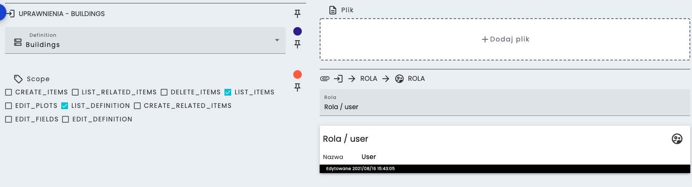

Uprawnienia
Uprawnienia pozwalają na nadanie wybranych praw danej roli dla dowolnej definicji. Każde uprawnienie dotyczy tylko jednej wybranej definicji.
Lista dostępnych uprawnień:
- LIST_DEFINITION - pozwala wyświetlić definicję na liście
- EDIT_DEFINITION - pozwala na edycję definicji
- EDIT_PLOTS - pozwala na edycję wykresów
- CREATE_ITEMS - pozwala na tworzenie obiektów
- LIST_ITEMS - pozwala na podgląd obiektów
- LIST_RELATED_ITEMS - pozwala na podgląd obiektów w relacji
- CREATE_RELATED_ITEMS - pozwala na tworzenie obiektów w relacji
- VIEW_HIDDEN_FIELD - pozwala na podgląd pól ukrytych
- EDIT_HIDDEN_FIELDS - pozwala na edycję pól ukrytych
- EDIT_FIELDS - pozwala na edycję pól
- DELETE_ITEMS - pozwala na usuwanie obiektu
Aby utworzyć nowy obiekt trzeba posiadać uprawnienia na tworzenie obiektu jak i na edycję pól, ponieważ w innym wypadku będzie można tylko utworzyć pusty obiekt.  Na powyższym obrazku widać przykładową kartę uprawnień. Wybrano definicję Buildings, przypisano do roli user z prawami LIST_ITEMS i LIST_DEFINITION.
Zmiana zakresu uprawnień
 Zmiana uprawnień dla konkretnej roli może być wykonana w następujący sposób:
1. Otwarcie menu filtrów
2. Wybór odpowiedniej roli
3. Włączenie trybu edycji tabeli
4. Zmiana zakresu uprawnień przy odpowiedniej definicji
Zmiana uprawnień dla konkretnej roli może być wykonana w następujący sposób:
1. Otwarcie menu filtrów
2. Wybór odpowiedniej roli
3. Włączenie trybu edycji tabeli
4. Zmiana zakresu uprawnień przy odpowiedniej definicji
Widoczność definicji w relacji
Aby widzieć obiekty, które są w relacji do danej definicji, potrzebne jest uprawnienie LIST_RELATED_ITEMS w podpiętej definicji. Przykład: Do definicji A podpięta jest definicja B. Użytkownik wchodząc w obiekt z definicji A zobaczy obiekty z definicji B jeśli będzie miał uprawnienie LIST_RELATED_ITEMS do definicji B.